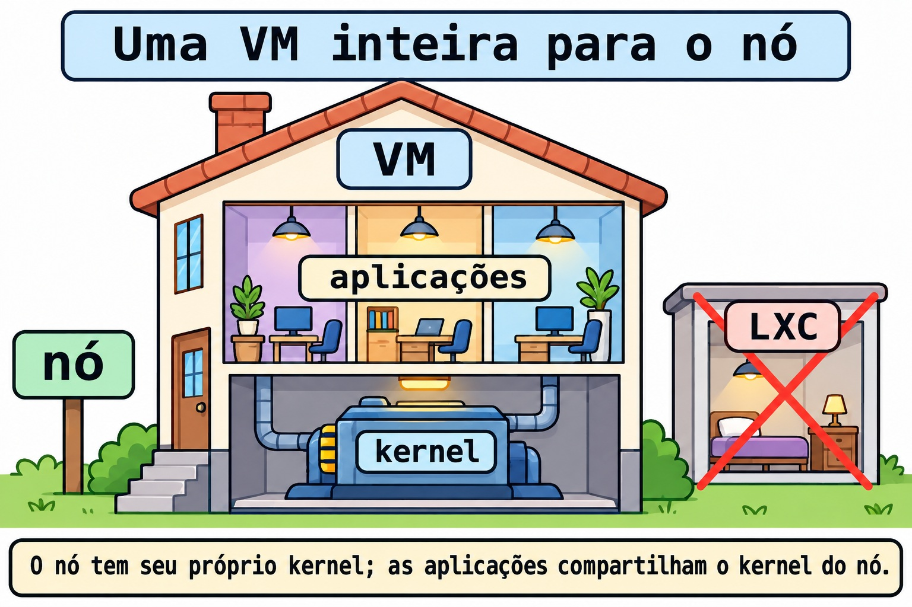
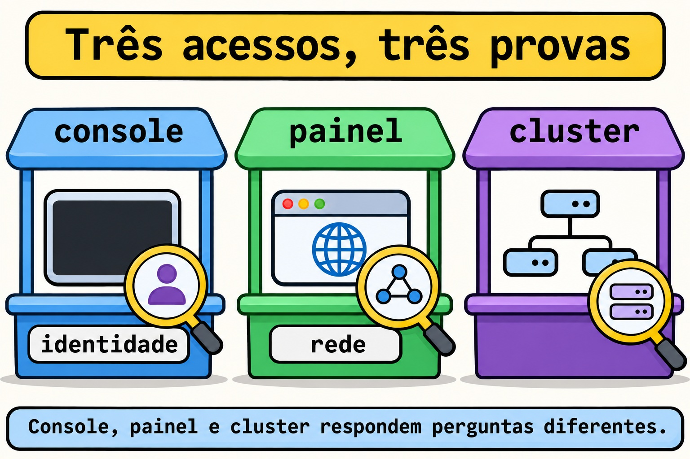

Aula 20.1 · Instalar em uma VM nova
O coração desta aula: criar um cluster identificado em uma VM limpa, com uma única rede de gestão.
| Ficha | Plano de trabalho |
|---|---|
| Módulo | M20 · NethServer 8 por dentro, aula 1 de 7 |
| Pré-requisitos | Inventário Proxmox e ISO Rocky 9 verificada |
| Bancada | VM 240 ns8-1; cliente 202 debian-lab; conta student |
| Rede | Uma placa na gestão, endereço estático real, gateway e DNS externos |
Use o guia de bancada M20. Ele concentra os endereços editáveis, os nomes locais e o acesso do navegador. Nenhum comando deste texto foi executado nas VMs durante a elaboração.
1 · Aquecimento
- Qual kernel pertence a uma VM e qual pertence a um contêiner?
- Um endereço recebido hoje por DHCP é uma configuração estática?
- Se o resolvedor depende do próprio serviço que você vai instalar, o que acontece antes de ele subir?
2 · Por que importa
O nó NS8 é uma máquina Linux completa. Preparar endereço, armazenamento e acesso de recuperação antes da instalação permite distinguir uma falha do sistema de uma falha da aplicação.
Ponte Windows
A VM é o computador; o painel organiza os serviços que ele executa. Abrir o painel não substitui conferir em qual computador você entrou.
3 · Modelo mental


Um cluster NS8 pode começar com um único nó. Aqui o nó inicial é a VM 240, nome ns8-1, hostname curto ns8-1 e FQDN ns8-1.lab.test. A conta de acesso Linux é student.
4 · O essencial
| Item | Escolha nesta aula |
|---|---|
| Sistema | Rocky Linux 9 mínimo, instalado do zero |
| Recursos | 4 vCPU, 8 GiB RAM, disco 80 GiB e 4 GiB de swap |
| Rede | Uma interface em vmbr0, IP estático real de gestão |
| Resolução | DNS externo para Internet; nomes privados locais pelo guia |
| Acesso | Console do Proxmox e navegador alcançando a gestão |
Rocky × Debian
A instalação NS8 desta aula ocorre na nova Rocky da VM 240. A Debian 202 será cliente. A Rocky 201 continua disponível para comparação; nenhuma das duas é convertida em nó NS8.
Decida 1
O inventário mostra uma máquina já usando o ID 240. O que fazer?
A. Apagar a VM porque o nome do lab é conhecido.
B. Parar e reconciliar o inventário antes de criar ou alterar.
C. Criar um CT com o mesmo ID.
5 · Lab guiado
Passo 1 · Criar somente a VM 240
Palpite: O inventário de um só host revela todas as VMs do cluster?
No host Proxmox autorizado, consulte o inventário global. Se o ID 240 estiver ocupado, resolva o conflito antes de continuar; não apague o ocupante.
pvesh get /cluster/resources --type vm --output-format json-prettyPela interface do Proxmox, crie a VM 240 com nome ns8-1, CPU do tipo host, 4 vCPU, 8 GiB de RAM e disco de 80 GiB no storage escolhido no inventário. Anexe a ISO Rocky 9 oficial cujo checksum você já comparou com a referência autenticada. Use uma única placa VirtIO na vmbr0.
Saída esperada: VM nova e inventário com proprietário, storage e ISO registrados.
Verifique: Confira a configuração antes de iniciar o instalador do sistema.
Passo 2 · Preparar sistema e endereço
Palpite: O nome da VM também configura o hostname do Linux?
Instale Rocky 9 mínimo, com conta student, sudo e uma credencial de recuperação guardada fora do material. Defina o hostname como ns8-1.lab.test; hostname -s deve mostrar ns8-1. Planeje 4 GiB de swap durante a instalação.
Configure apenas a interface de gestão com IP estático reservado, prefixo, gateway e resolvedores reais do laboratório. Siga o guia para os nomes locais no próprio nó e na 202. O arquivo hosts não oferece DNS aos contêineres.
hostname -s
hostname -f
ip -br -4 address
ip -4 route
cat /etc/resolv.conf
getent ahostsv4 ns8-1.lab.test
getent ahostsv4 mirrorlist.nethserver.org
swapon --show
df -h / /home
timedatectl statusSaída esperada: Hostname curto ns8-1, FQDN privado e acesso externo funcionando.
Verifique: O resolvedor deve ser externo ao NS8; não use loopback ou o próprio nó como nameserver.
Passo 3 · Obter e ler o instalador
Palpite: O hash local autentica sozinho quem publicou o arquivo?

Entre como student e use sudo -i dentro da VM. O próximo bloco grava somente na pasta de trabalho nova; uma falha retorna da função, sem encerrar seu terminal.
m20_obter_instalador() {
if [ "$(hostname -s)" != ns8-1 ] || [ "$(id -u)" -ne 0 ]; then
printf '%s\n' 'Use root dentro da VM ns8-1.'
return 1
fi
if [ -e /root/m20-lab ]; then
printf '%s\n' 'A pasta já existe; confira a tentativa anterior antes de continuar.'
return 1
fi
install -d -m 0700 /root/m20-lab || return 1
dnf install -y curl less openssl || return 1
curl --fail --show-error --location --proto '=https' --tlsv1.2 --retry 10 --retry-delay 1 --retry-all-errors https://raw.githubusercontent.com/NethServer/ns8-core/ns8-stable/core/install.sh --output /root/m20-lab/install.sh || return 1
bash -n /root/m20-lab/install.sh || return 1
sha256sum /root/m20-lab/install.sh > /root/m20-lab/install.sh.sha256
chmod 0600 /root/m20-lab/install.sh /root/m20-lab/install.sh.sha256
}
m20_obter_instalador && less /root/m20-lab/install.shSaída esperada: Script baixado da origem oficial, legível e com hash local registrado.
Verifique: Compare a URL com a documentação e leia o script; sintaxe e checksum local não substituem essa conferência.
Passo 4 · Instalar no convidado
Palpite: Um instalador incompleto deve ser repetido às cegas?
m20_instalar() {
if [ "$(hostname -s)" != ns8-1 ] || [ "$(id -u)" -ne 0 ]; then
printf '%s\n' 'Este instalador pertence somente à VM ns8-1.'
return 1
fi
sha256sum -c /root/m20-lab/install.sh.sha256 || return 1
bash /root/m20-lab/install.sh || return 1
command -v runagent
}
m20_instalarSe a função terminar sem erro, reinicie somente a VM pelo painel Proxmox. O instalador também atualiza pacotes do sistema. Não execute outra instalação em paralelo e não desligue o host.
Saída esperada: VM retorna ao disco instalado e oferece os componentes NS8.
Verifique: Entre novamente com student, use sudo -i e confira hostname, endereço e relógio.
Passo 5 · Conferir o primeiro acesso
Palpite: Um aviso TLS identifica sozinho qual máquina respondeu?


runagent -l
ss -ltnp '( sport = :443 )'
openssl s_client -connect 127.0.0.1:443 -servername ns8-1.lab.test -showcerts < /dev/null 2>/dev/null | openssl x509 -noout -subject -issuer -dates -fingerprint -sha256No navegador da VM 202, aberto pelo console conforme o guia, abra https://IP-DE-GESTAO/cluster-admin/, substituindo o marcador pelo endereço real do inventário. Compare o certificado mostrado com a impressão obtida no console independente. Só prossiga nesta bancada se coincidirem.
Use a conta inicial admin e a credencial indicada na documentação oficial da versão instalada. Troque essa senha imediatamente. A conta do painel é separada da conta Linux student. A 20.4 instalará confiança TLS normal para os nomes privados.
Saída esperada: Painel da VM esperada e nova senha funcionando em um segundo login.
Verifique: A exceção de bootstrap é pontual; não desative a verificação TLS do navegador inteiro.
Passo 6 · Criar e registrar o cluster
Palpite: A rede da VPN pode sobrepor uma rede já usada?
Escolha Create cluster e confirme ns8-1.lab.test. Antes de aceitar a VPN proposta, compare o CIDR com as redes físicas, VPNs e redes de contêineres da bancada. Escolha um bloco sem sobreposição e registre-o.
No terminal root da VM, preencha os dois endereços reais abaixo antes de executar a função. Eles são os mesmos definidos no guia. O arquivo não contém senhas.
NS8_IP='' # IP real reservado da VM 240
CLIENT_IP='' # IP real da VM 202
NS8_FQDN=ns8-1.lab.test
WIKI_FQDN=wiki.lab.test
m20_registrar_cluster() {
if [ "$(hostname -s)" != ns8-1 ] || [ "$(id -u)" -ne 0 ] || [ -z "$NS8_IP" ] || [ -z "$CLIENT_IP" ]; then
printf '%s\n' 'Confira o nó e preencha os dois endereços reais.'
return 1
fi
if [ -e /root/m20-lab/operador.env ]; then
printf '%s\n' 'O inventário já existe; confira-o antes de substituir.'
return 1
fi
NODE_ID=$(redis-cli --raw HGET cluster/environment NODE_ID) || return 1
VPN_CIDR=$(redis-cli --raw GET cluster/network) || return 1
if ! [[ "$NODE_ID" =~ ^[1-9][0-9]*$ ]] || [ -z "$VPN_CIDR" ]; then
printf '%s\n' 'O cluster ainda não forneceu ID e VPN válidos.'
return 1
fi
umask 077
printf 'NS8_IP=%q\nCLIENT_IP=%q\nNS8_FQDN=%q\nWIKI_FQDN=%q\nNODE_ID=%q\nVPN_CIDR=%q\n' "$NS8_IP" "$CLIENT_IP" "$NS8_FQDN" "$WIKI_FQDN" "$NODE_ID" "$VPN_CIDR" > /root/m20-lab/operador.env
chmod 0600 /root/m20-lab/operador.env
}
m20_registrar_cluster
redis-cli PING
systemctl --failed --no-pagerSaída esperada: Painel e arquivo concordam sobre o ID real do líder e a VPN.
Verifique: No Proxmox, crie o snapshot m20a1-cluster da VM 240 após a conferência. Esse é o ponto de partida da 20.2.
Decida 2
O certificado do navegador diverge do console. O que fazer?
A. Parar e investigar nome, rota e certificado antes do login.
B. Desativar a verificação TLS globalmente.
C. Aceitar porque o endereço parece conhecido.
6 · Quebre e conserte
Quebra 1 · Nome local ausente
Sintoma: O navegador da bancada não encontra o nome privado.
Investigação: Compare o nome solicitado e o mapeamento do guia.
Causa: O mapeamento local foi omitido ou usa outro endereço.
Conserto: Corrija somente a entrada M20 pelo guia.
Prevenção: Registre endereço real e nome separadamente.
Verifique: A resolução local aponta ao endereço do inventário.
Quebra 2 · Origem não conferida
Sintoma: Você não consegue dizer de onde veio o script salvo.
Investigação: Compare URL e hash com o registro do download.
Causa: Um arquivo encontrado no disco não comprova a origem.
Conserto: Obtenha novamente da URL oficial em uma pasta nova, sem executar o arquivo desconhecido.
Prevenção: Leia e registre a origem antes de instalar.
Verifique: Você identifica os bytes efetivamente usados.
Quebra 3 · Certificado diferente
Sintoma: A impressão do navegador difere da obtida no console.
Investigação: Compare endereço, nome e certificado da conexão nova.
Causa: Você pode ter alcançado outro endpoint.
Conserto: Interrompa o login e corrija o caminho de acesso.
Prevenção: Mantenha o console como canal independente.
Verifique: As impressões coincidem antes de usar credenciais.
7 · Armadilhas
- Nome da VM, hostname curto, FQDN e ID NS8 são referências diferentes.
- Um arquivo hosts local não substitui o resolvedor externo dos contêineres.
- Uma instalação interrompida exige diagnóstico, não repetição automática.
- O snapshot de um nó só não é um plano de retorno para um cluster de vários nós.
8 · Quiz
- Por que LXC não atende a este roteiro?
- Qual é a limitação de um checksum calculado localmente?
- Por que o DNS do nó deve ser externo ao NS8?
- Que prova diferencia o primeiro acesso TLS de uma aceitação cega?
- O que deve ser verificado antes de escolher a VPN do cluster?
9 · Folha de bolso
hostname -s
hostname -f
runagent -l
redis-cli --raw HGET cluster/environment NODE_ID
redis-cli --raw GET cluster/network10 · Checklist e fechamento
- [ ] VM 240 criada sem substituir outra máquina.
- [ ] Uma rede de gestão estática e Internet conferidas.
- [ ] Origem do instalador e primeiro certificado conferidos.
- [ ] Cluster criado e arquivo do operador protegido.
- [ ] Snapshot m20a1-cluster registrado.
Reboot de conferência: o reboot após a instalação já fez parte do lab. Confirme que o painel e o cluster voltaram antes de salvar o snapshot-base.
11 · Na vida real
Leia o inventário de um ambiente autorizado e identifique endereço estático, resolvedor externo e acesso de recuperação. Registre o que falta antes de planejar a instalação; esta atividade não pede alterações.
12 · Aprofundar quando quiser
Gabarito comentado
Aquecimento: LXC compartilha o kernel do host; um lease não substitui configuração estática; dependência circular de DNS pode impedir o próprio início.
Decida 1: B. O inventário global vem antes de usar o ID, inclusive se o ocupante for CT.
Decida 2: A. O certificado divergente impede atribuir a conexão ao nó esperado.
Quiz 1: o deployment NS8 em LXC não é suportado; esta bancada requer VM com kernel próprio.
Quiz 2: o hash identifica os bytes recebidos; sem uma referência autenticada ele não comprova quem os publicou.
Quiz 3: o resolvedor do nó não pode depender de uma aplicação hospedada por ele, nem de loopback que os contêineres interpretariam localmente.
Quiz 4: conferir a impressão pelo console independente antes de usar credenciais; a confiança normal será instalada na 20.4.
Quiz 5: ausência de sobreposição com redes físicas, VPNs e contêineres, além da capacidade futura.